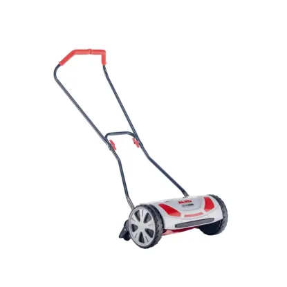
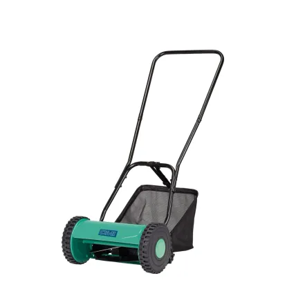
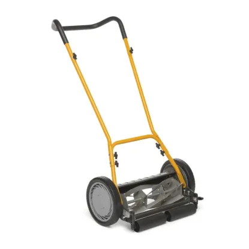

AL-KO kézi fűnyíró Razor Cut 38.1 HM Comfort
Hengerkéses fűnyíró AL-KO Razor Cut 38.1 HM Comfort.Tökéletes vágási kép az érintésmentes, gyepkímélő vágási technika által.Kis gördülésiellenállású vágórendszer és nagyfokú fordulékonyság. Az AL-KO Razor Cut 38.1 HM Comfort lehetővé teszi a csendes és károsanyagkibocsátás mentes munkát.

CMI fűnyíró C-HS-30 orsós
A 30 cm-es vágási szélességével a CMI C-HS-30 orsós fűnyíró megbízhatóan és halkan nyírja a füvet. Emellett a vágásmagasság egy praktikus szabályozóval fokozatmentesen állítható 15mm és 42 mm között. A vágásmagasság ellenőrző skáláján látható a kiválasztott érték. Az orsósi fűnyíró megfelelő, 20 l befogadóképességű gyűjtőkosárral rendelkezik. A 30 cm-es munkaszélesség ideális max. 100 m2 gyepfelületekhez.

STIGA SCM 240 R Suhanó Fűnyíró
Kézi meghajtású hengerfűnyíró 40 cm vágási szélességgel és hátsó terelőrendszerrel. Ideális segítség kisebb kertek vagy újonnan létesített gyepek számára.